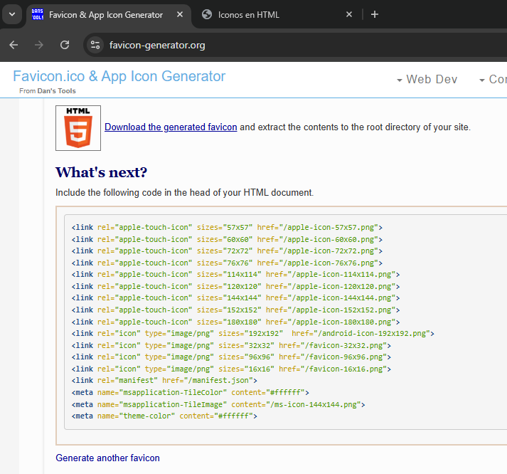

ICONOS EN HTML
Icono Pestaña Navegador
Para colocar un icono en la pestaña del navegador se utiliza la etiqueta <link>, la cual irá ubicada dentro de la etiqueta <head>
Ejemplo:
<head>
<meta charset="UTF-8">
<link rel="icon" href="11-multimedia-content/assets/icons/favicon.ico" type="image/x-icon">
</head>
El atributo (rel) hace que el navegador entienda el proposito de la etiqueta <link> y el atributo (type), al igual que en las etiquetas de contenido multimedia, le indica al navegador el tipo de recurso que se está proporcionando.
Notas
- Usá imágenes cuadradas (los iconos no deben estar estirados).
- Idealmente usa el formato .png o .ico, también puede ser en formato .svg pero es probable q no funcione en todos los casos, ya sea porq el novegador no lo soporta o porq no está actualizado a su última versión.
- Si se puede, hay que probarlo en diferentes navegadores y dispositivos.
- Usá el formato .svg para escalabilidad en sitios modernos, pero añade fallback (versión de respaldo) en formato .png o .ico.
Forma Facil
Usa una herramienta como favicon-generator.org en donde unicamente con cargar la imagen del icono, generará los diferentes formatos que serviran para los distintos dispositivos y navegadores. Ejemplo:

Iconos Página Web
Son iconos q normalmente suelen ser utilizados para botones, para menús, para logos de redes sociales, entre otros, podemos encontrar sitios webs, que cuentan con estos iconos prefabricados. Algunos sitios webs son:
- FontAwesome
- TablerIcons
- Radix
- Svgl
- https://iconoir.com
- Lucide
- CSSgo
- Animatedicons
- ReactIcons
- Heroic
Cada uno proporciona diferentes medios para poder usar los iconos q predisponen. Ya sea CDN (red de distribución de contenido), codigo svg, descargar como imagen, entre otras. Ejemplo: